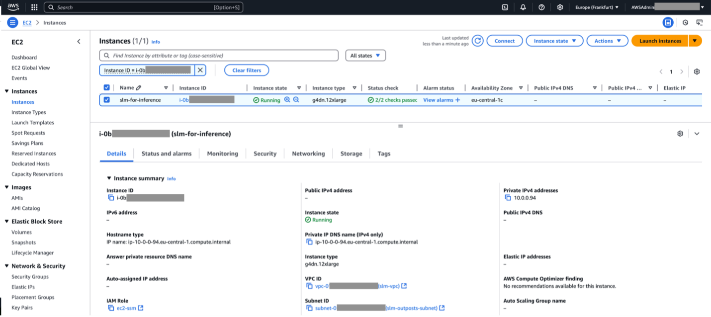
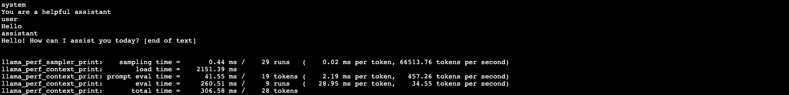

Blog 1
Chạy và tối ưu các Small Language Models tại on-premises và tại edge
Bởi Chris McEvilly, Fernando Galves Guy Ben Baruchn | Ngày: 23/06/2025
| In Advanced (300), AWS Outposts, Technical How-to
Khi bạn chuyển các triển khai generative AI của mình từ giai đoạn prototype sang production, bạn có thể nhận thấy nhu cầu cần chạy các foundation models (FMs) on-premises hoặc at the edge để đáp ứng các yêu cầu về data residency, information security (InfoSec) policy, hoặc low latency. Ví dụ, các khách hàng trong những ngành được quản lý chặt chẽ như financial services, healthcare, và telecom có thể muốn tận dụng các chatbots để hỗ trợ customer queries, tối ưu hóa internal workflows cho các complex reporting, và tự động phê duyệt yêu cầu - đồng thời vẫn giữ dữ liệu trong phạm vi quốc gia. Tương tự, một số tổ chức chọn triển khai các small language models (SLMs) của riêng họ để phù hợp với các yêu cầu InfoSec nội bộ nghiêm ngặt. Ví dụ khác, các nhà sản xuất có thể muốn triển khai SLMs ngay trong nhà máy của họ để phân tích dữ liệu sản xuất và cung cấp chẩn đoán thiết bị theo thời gian thực. Để đáp ứng các nhu cầu về data residency, latency và InfoSec của người dùng, bài viết này cung cấp hướng dẫn về cách triển khai generative AI FMs vào AWS Local Zones và AWS Outposts. Mục tiêu là trình bày một framework giúp chạy nhiều loại SLMs khác nhau nhằm đáp ứng các yêu cầu xử lý dữ liệu tại chỗ dựa trên customer engagements.
Các tùy chọn triển khai Generative AI
Sự phát triển của generative AI trong triển khai và thử nghiệm đã tăng tốc với hai tùy chọn triển khai doanh nghiệp chính. Tùy chọn đầu tiên là sử dụng large language model (LLM) để đáp ứng các nhu cầu của doanh nghiệp. LLMs có tính linh hoạt đáng kinh ngạc: một mô hình duy nhất có thể thực hiện nhiều nhiệm vụ hoàn toàn khác nhau, chẳng hạn như trả lời câu hỏi, viết mã (coding), tóm tắt tài liệu, dịch ngôn ngữ, và tạo nội dung (content generation). LLMs có tiềm năng làm thay đổi cách con người tạo nội dung cũng như cách sử dụng công cụ tìm kiếm và trợ lý ảo. Tùy chọn triển khai thứ hai là sử dụng small language models (SLMs), tập trung vào một use case cụ thể. SLMs là các compact transformer models chủ yếu sử dụng decoder-only hoặc encoder-decoder architectures, thường có ít hơn 20 tỷ parameters, mặc dù định nghĩa này đang phát triển khi các mô hình lớn hơn ra đời. SLMs có thể đạt được hiệu suất tương đương hoặc thậm chí vượt trội khi được fine-tuned cho các domain hoặc task cụ thể, khiến chúng trở thành lựa chọn thay thế tuyệt vời cho các ứng dụng chuyên biệt.
Ngoài ra, SLMs còn mang lại thời gian suy luận (inference time) nhanh hơn, yêu cầu tài nguyên thấp hơn, và phù hợp để triển khai trên nhiều loại thiết bị hơn, đặc biệt hữu ích cho các ứng dụng chuyên biệt và edge computing, nơi không gian và nguồn điện bị giới hạn. Mặc dù SLMs có phạm vi và độ chính xác hạn chế hơn so với LLMs, bạn có thể nâng cao hiệu suất của chúng cho nhiệm vụ cụ thể thông qua Retrieval Augmented Generation (RAG) và fine-tuning. Sự kết hợp này tạo ra một SLM có khả năng trả lời các truy vấn liên quan đến một domain cụ thể với mức độ chính xác tương đương LLM, đồng thời giảm thiểu hiện tượng hallucinations. Nhìn chung, SLMs cung cấp các giải pháp hiệu quả, cân bằng giữa nhu cầu người dùng và hiệu quả chi phí.
Tổng quan kiến trúc
Giải pháp được trình bày trong bài viết này sử dụng Llama.cpp, một framework được tối ưu hóa được viết bằng C/C++ nhằm chạy hiệu quả nhiều loại SLMs. Llama.cpp có thể hoạt động hiệu quả trong nhiều môi trường tính toán khác nhau, cho phép generative AI models vận hành trong Local Zones hoặc Outposts mà không cần các cụm GPU lớn (GPU clusters) như thường thấy khi chạy LLMs trong native frameworks của chúng. Framework này mở rộng lựa chọn mô hình và tăng hiệu suất hoạt động khi triển khai SLMs vào Local Zones và Outposts.
Kiến trúc này cung cấp một template cho việc triển khai nhiều loại SLMs nhằm hỗ trợ các use case như chatbot hoặc content generation. Giải pháp bao gồm một front-end application nhận user queries, định dạng các prompts để trình bày cho mô hình và trả về các phản hồi từ mô hình cho người dùng. Để hỗ trợ một giải pháp có khả năng mở rộng (scalable), application servers và Amazon EC2 G4dn GPU-enabled instances được đặt phía sau Application Load Balancer (ALB).
Trong trường hợp số lượng prompts đến vượt quá khả năng xử lý của SLMs, có thể triển khai message queue ở phía trước SLMs. Ví dụ, bạn có thể triển khai một RabbitMQ cluster để hoạt động như queue manager cho hệ thống.
Hình 1: Architecture overview
Triển khai giải pháp
Các hướng dẫn sau đây mô tả cách khởi chạy một SLM bằng Llama.cpp trong Local Zones hoặc trên Outposts. Mặc dù phần kiến trúc tổng quan trước đó trình bày một giải pháp hoàn chỉnh với nhiều thành phần, bài viết này tập trung cụ thể vào các bước cần thiết để triển khai SLM trong EC2 instance sử dụng Llama.cpp.
Điều kiện tiên quyết
Để triển khai giải pháp này, bạn cần chuẩn bị các điều kiện sau:
-
AWS account đã được allowlisted cho Local Zones, hoặc có một logical Outpost đã được cài đặt, cấu hình và hoạt động.
-
Quyền truy cập vào G4dn instances trong tài khoản của bạn tại vị trí đã chọn
_(kiểm tra trong AWS Service Quotas).
_ -
Một VPC đã được tạo để lưu trữ môi trường triển khai.
-
Public và private subnets để hỗ trợ môi trường trong VPC.
-
Một security group được liên kết với EC2 instance của bạn.
-
AWS Identity and Access Management (IAM) role với quyền AWS Systems Manager Session Manager permissions.
 Hình 1: Architecture overview
Hình 1: Architecture overview
1. Khởi chạy GPU instance cho SLM
Đăng nhập vào AWS Management Console, mở Amazon EC2 console,
và khởi chạy một g4dn.12xlarge EC2 instance trong Local Zone hoặc Outposts environment của bạn.
Cấu hình bao gồm:
-
Red Hat Enterprise Linux 9 (HVM), SSD Volume Type
-
Private subnet liên kết với Local Zone hoặc Outposts rack
-
30 GiB gp2 root volume và thêm 300 GiB gp2 EBS volume
-
IAM role đã được cấu hình với các quyền cần thiết cho Systems Manager
-
SSM Agent được cài đặt để kết nối tới instance
(tham khảo hướng dẫn trong Install SSM Agent on RHEL 8.x and 9.x trong Systems Manager User Guide)
Để biết hướng dẫn chi tiết về việc khởi chạy EC2 instance, tham khảo: Launch an EC2 instance using the launch instance wizard in the console hoặc Launch an instance on your Outposts rack.
 Hình 2: SLM instance launched
2. Cài đặt NVIDIA drivers
-
Kết nối tới SLM instance bằng Systems Manager.
Bạn có thể làm theo hướng dẫn tại Connect to your Amazon EC2 instance using Session Manager trong Amazon EC2 User Guide. -
Cài đặt kernel packages và các công cụ cần thiết:
sudo su -
dnf update -y <br>subscription-manager repos --enable codeready-builder-for-rhel-9-x86_64-rpms
dnf install -y <https://dl.fedoraproject.org/pub/epel/epel-release-latest-9.noarch.rpm> dnf install -y ccache cmake gcc-c++ git git-lfs htop python3-pip unzip wget
dnf install -y dkms elfutils-libelf-devel kernel-devel kernel-modules-extra \\ libglvnd-devel vulkan-devel xorg-x11-server-Xorg <br>systemctl enable --now dkms
reboot
-
Cài đặt Miniconda3 trong thư mục /opt/miniconda3 hoặc trình quản lý package tương thích khác để quản lý Python dependencies.
-
Cài đặt NVIDIA drivers:
dnf config-manager --add-repo \\
<http://developer.download.nvidia.com/compute/cuda/repos/rhel9/x86_64/cuda-rhel9.repo>
dnf module install -y nvidia-driver:latest-dkms
dnf install -y cuda-toolkit
echo 'export PATH=/usr/local/cuda/bin:\$PATH' >> ~/.bashrc
echo 'export LD_LIBRARY_PATH=/usr/local/cuda/lib64:\$LD_LIBRARY_PATH' >> ~/.bashrc
source ~/.bashrc
3. Tải xuống và cài đặt Llama.cpp
-
Tạo và mount filesystem của Amazon EBS volume bạn đã tạo trước đó vào thư mục /opt/slm. Xem hướng dẫn tại Make an Amazon EBS volume available for use trong Amazon EBS User Guide.
-
Chạy các lệnh sau để tải và cài đặt Llama.cpp:
cd /opt/slm
git clone -b b4942 \\<https://github.com/ggerganov/llama.cpp.git>
cd llama.cpp
cmake -B build -DGGML_CUDA=ON
cmake --build build --config Release -j\$(nproc)
conda install python=3.12
pip install -r requirements.txt
pip install nvitop
4. Tải xuống và chuyển đổi SLM model
Để chạy SLM hiệu quả với Llama.cpp, bạn cần chuyển đổi model sang định dạng GGUF (GPT-Generated Unified Format). Việc chuyển đổi này giúp tối ưu hiệu năng và mức sử dụng bộ nhớ cho các môi trường edge deployments có tài nguyên giới hạn. GGUF được thiết kế đặc biệt để hoạt động với Llama.cpp inference engine. Các bước sau đây minh họa cách tải SmolLM2 1.7B và chuyển đổi sang định dạng GGUF:
mkdir /opt/slm/models
cd /opt/slm/models
git lfs install
git clone <https://huggingface.co/HuggingFaceTB/SmolLM2-1.7B-Instruct>
cd /opt/slm/llama.cpp
python3 convert_hf_to_gguf.py --outtype f16 \\
--outfile /opt/slm/llama.cpp/models/SmolLM2-1.7B-Instruct-f16.gguf \\
/opt/slm/models/SmolLM2-1.7B-Instruct
echo 'export PATH=/opt/slm/llama.cpp/build/bin:\$PATH' >> ~/.bashrc
echo 'export LD_LIBRARY_PATH=/opt/slm/llama.cpp/build/bin:\$LD_LIBRARY_PATH' >> ~/.bashrc
source ~/.bashrc
Bạn cũng có thể tải các models khác được công khai từ Hugging Face nếu cần,
và thực hiện quá trình chuyển đổi tương tự.
SLM Operation and Optimization
Việc triển khai SLMs thông qua Llama.cpp mang lại tính linh hoạt cao trong vận hành, cho phép tùy chỉnh môi trường và tối ưu hóa theo các use case cụ thể. Với Llama.cpp, bạn có thể chọn nhiều tham số khác nhau để tối ưu việc sử dụng tài nguyên hệ thống và hoạt động của mô hình, giúp tận dụng hiệu quả tài nguyên mà không tiêu tốn không cần thiết hoặc ảnh hưởng đến hiệu suất. Các tham số phổ biến khi chạy Llama.cpp giúp kiểm soát cách mô hình hoạt động bao gồm:
- -ngl N, –n-gpu-layers N: Khi biên dịch với GPU support, tùy chọn này cho phép chuyển một số layer sang GPU để tính toán, giúp tăng hiệu suất xử lý.
- -t N, –threads N: Xác định số lượng threads sử dụng trong quá trình sinh nội dung. Để đạt hiệu suất tối ưu, nên đặt giá trị này bằng số lõi CPU vật lý có trong hệ thống.
- -n N, –n-predict N: Xác định số lượng tokens cần sinh ra khi tạo văn bản.
Điều chỉnh giá trị này sẽ ảnh hưởng đến độ dài đầu ra của văn bản. - -sm, –split-mode: Xác định cách chia mô hình giữa nhiều GPU khi chạy trong môi trường multi-GPU. Nên thử “row” splitting mode, vì trong một số trường hợp, nó mang lại hiệu suất tốt hơn so với chia theo layer-based mặc định.
- --temp N: Temperature điều khiển mức độ ngẫu nhiên trong đầu ra của SLM. Giá trị thấp hơn (ví dụ 0.2-0.5) tạo ra câu trả lời nhất quán và xác định hơn, giá trị cao hơn (ví dụ 0.9-1.2) giúp mô hình sáng tạo và đa dạng hơn (mặc định: 0.88)
- -s SEED, –seed SEED: Cung cấp phương pháp kiểm soát ngẫu nhiên của mô hình. Việc đặt seed cố định giúp tái tạo kết quả nhất quán trong nhiều lần chạy (mặc định: -1, -1 = random seed).
- -c, –ctx-size N: Xác định context size, số lượng tokens mà FM có thể xử lý trong một prompt. Giá trị này ảnh hưởng đến mức RAM cần thiết và độ chính xác của mô hình. Ví dụ: với Phi-3, khuyến nghị giảm context size còn 8k hoặc 16k để tối ưu hiệu suất. Lệnh mẫu: –ctx-size XXXX trong đó XXXX là context size.
Phần này minh họa cách tối ưu hóa hiệu suất SLM cho các use case cụ thể bằng Llama.cpp, gồm hai kịch bản phổ biến: Chatbot interactions và Text summarization
Chatbot Use Case Example
Token Size Requirements
Đối với ứng dụng chatbot, kích thước token thông thường: Input: khoảng 50-150 tokens, hỗ trợ người dùng hỏi 1-2 câu và Output: khoảng 100-300 tokens, giúp mô hình phản hồi ngắn gọn nhưng chi tiết.
Sample Command
./build/bin/llama-cli -m ./models/SmolLM2-1.7B-Instruct-f16.gguf \\
-ngl 99 -n 512 --ctx-size 8192 -sm row --temp 0
--single-turn \\
-sys "You are a helpful assistant" -p "Hello"
 Hình 3: Chatbot example
Command Explanation
- -m ./models/SmolLM2-1.7B-Instruct-f16.gguf : Chỉ định file model sử dụng
- -ngl 99 : Gán 99 GPU layers để đạt hiệu suất tối ưu
- -n 512 : Tối đa 512 output tokens (đủ cho 100-300 tokens cần thiết)
- --ctx-size 8192 : Đặt kích thước context window để xử lý hội thoại phức tạp
- -sm row : Chia hàng across GPUs
- --temp 0 : Đặt temperature bằng 0 để giảm tính sáng tạo
- --single-turn : Tối ưu cho các phản hồi một lượt
- -sys “You are a helpful assistant” : Thiết lập system prompt định nghĩa vai trò trợ lý
- -p “Hello” : Nhập prompt của người dùng
Text Summarization Example
Dòng lệnh dưới đây cho thấy SmolLM2-1.7B chạy tác vụ tóm tắt văn bản:
PROMPT_TEXT="Summarize the following text: Amazon DynamoDB is a serverless,
NoSQL database service that allows you to develop modern applications
at any scale. As a serverless database, you only pay for what you use
and DynamoDB scales to zero, has no cold starts, no version upgrades,
no maintenance windows, no patching, and no downtime maintenance.
DynamoDB offers a broad set of security controls and compliance
standards. For globally distributed applications, DynamoDB global
tables is a multi-Region, multi-active database with a 99.999%
availability SLA and increased resilience. DynamoDB reliability is
supported with managed backups, point-in-time recovery, and more.
With DynamoDB streams, you can build serverless event-driven applications."
./build/bin/llama-cli -m ./models/SmolLM2-1.7B-Instruct-f16.gguf \\
-ngl 99 -n 512 --ctx-size 8192 -sm row --single-turn \\
-sys "You are a technical writer" \\
--prompt "\$PROMPT_TEXT"
 Hình 4: Summarization example
Hình 4: Summarization example
Cleaning Up
Để tránh chi phí phát sinh không cần thiết, hãy thực hiện các bước sau để xóa tài nguyên sau khi hoàn tất:
- Terminate EC2 instance để ngừng tính phí. Xác minh rằng EBS volume 300 GiB đã được xóa đúng cách bằng cách kiểm tra mục Volumes trong phần Elastic Block Store.Nếu vẫn còn volume, hãy chọn và thực hiện: Actions > Delete volume.
Kết luận
Bài viết này đã hướng dẫn bạn từng bước triển khai SLMs vào môi trường AWS on-premises hoặc edge nhằm đáp ứng các nhu cầu xử lý dữ liệu cục bộ. Phần đầu bài viết đã thảo luận về lợi ích kinh doanh của SLMs, bao gồm: Thời gian suy luận (inference time) nhanh hơn, Giảm chi phí vận hành và cải thiện kết quả đầu ra của mô hình. Các SLMs được triển khai bằng Llama.cpp và tối ưu hóa cho các use case cụ thể có thể cung cấp dịch vụ người dùng hiệu quả từ edge theo cách mở rộng linh hoạt (scalable). Các tham số tối ưu hóa được mô tả trong bài viết này cung cấp nhiều phương pháp cấu hình khác nhau để điều chỉnh mô hình cho các kịch bản triển khai đa dạng. Bạn có thể làm theo các bước và kỹ thuật được trình bày trong bài để triển khai generative AI phù hợp với yêu cầu về data residency, latency, hoặc InfoSec compliance, đồng thời vận hành hiệu quả trong giới hạn tài nguyên của môi trường edge computing. Để tìm hiểu thêm, hãy truy cập AWS Local Zones và AWS Outposts.